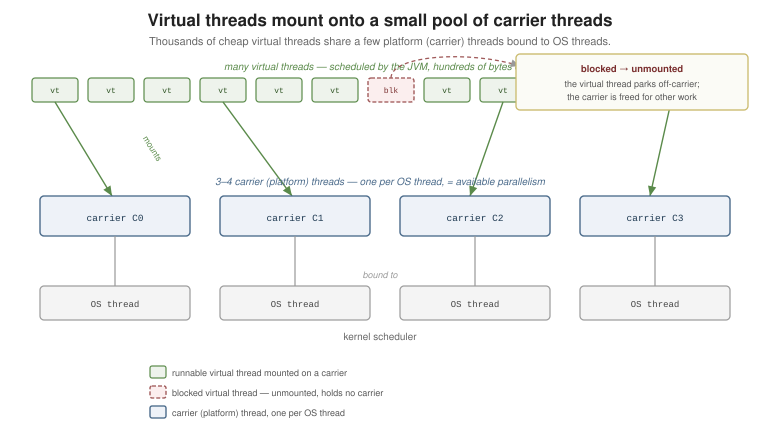

Virtual Threads
|
This content was generated with the assistance of AI and should be verified against the official documentation before being relied on in production. |
A virtual thread is a java.lang.Thread that is scheduled by the JVM rather than the operating
system, so it costs a few hundred bytes instead of a megabyte-scale OS stack. Millions can exist at
once, and blocking one is cheap. This lets straightforward blocking code — one thread per request — scale like hand-written asynchronous code. This page is grounded in the official
dev.java "Virtual Threads" tutorial and the
JDK core-libraries virtual-threads
guide; the introductory books in this section’s bibliography predate the feature entirely.
Platform Threads vs. Virtual Threads
A platform thread is a thin wrapper over an OS thread: creating one is expensive, and a server can support only a few thousand. The old workaround was a bounded pool plus asynchronous, callback-style APIs that never block a pooled thread — fast, but hard to read and debug.
A virtual thread removes the trade-off. It runs Java code on an OS thread only while it is doing work;
the moment it blocks (I/O, a lock, sleep), it steps aside and the OS thread is reused. You write
plain sequential code — var response = client.send(request) — and still get high concurrency.
// three ways to start one
Thread t = Thread.ofVirtual().name("worker-1").start(() -> System.out.println("hi"));
t.join();
Thread.startVirtualThread(() -> System.out.println("also virtual")); // shorthand
Runnable task = () -> System.out.println("later");
Thread u = Thread.ofVirtual().unstarted(task); // build now, start when ready
u.start();Thread.ofVirtual()
returns a
Thread.Builder;
Thread.ofPlatform() is its counterpart for the classic kind. For the thread-per-request model, hand
every task to
Executors.newVirtualThreadPerTaskExecutor(),
which creates one fresh virtual thread per submitted task — never pool virtual threads.
import java.util.concurrent.*;
try (ExecutorService exec = Executors.newVirtualThreadPerTaskExecutor()) {
for (int i = 0; i < 10_000; i++) {
int id = i;
exec.submit(() -> {
String body = fetch("https://example.com/item/" + id); // blocking call is fine
return parse(body);
});
}
} // returns once all 10,000 tasks have finishedEvery Thread reports which kind it is, and virtual threads are unnamed unless you set a name:
jshell> Thread.currentThread().isVirtual()
$1 ==> false
jshell> Thread.ofVirtual().start(() -> System.out.println(Thread.currentThread()))
VirtualThread[#26]/runnable@ForkJoinPool-1-worker-1
$2 ==> VirtualThread[#26]/runnable
jshell> var t = Thread.ofVirtual().name("job-", 0).start(() -> {})
t ==> VirtualThread[#28,job-0]/terminatedStarting a million virtual threads is routine; starting a million platform threads exhausts memory. Because each task gets its own thread, thread-local context, stack traces, and step-through debugging all work the way they do in single-threaded code.
Carrier Threads, Mounting, and Pinning
Virtual threads run on a small pool of platform threads called carrier threads (by default sized to the number of available processors). Running a virtual thread on a carrier is mounting; parking it and freeing the carrier when it blocks is unmounting. Because a blocked virtual thread holds no carrier, a handful of carriers serve a very large number of virtual threads.

A virtual thread is pinned when it cannot unmount from its carrier while blocked, which reduces
throughput. As of the current release line a synchronized block or method no longer pins in the
common case; the remaining causes are native stack frames (a JNI call) and a few internal blocking
operations. Where pinning still matters, replace the monitor with an explicit
ReentrantLock,
which releases the carrier cleanly.
import java.util.concurrent.locks.ReentrantLock;
private final ReentrantLock lock = new ReentrantLock();
void updateShared() {
lock.lock();
try {
blockingIo(); // virtual thread unmounts here; carrier runs other work
} finally {
lock.unlock();
}
}Diagnose pinning with the JDK Flight Recorder event jdk.VirtualThreadPinned or the system property
-Djdk.tracePinnedThreads=full. Keep synchronized regions that wrap blocking calls short, and prefer
java.util.concurrent locks in hot paths. The carrier pool defaults to the number of available
processors and can be resized with -Djdk.virtualThreadScheduler.parallelism, though the default is
right for almost all workloads.
When to use them
Virtual threads target code that spends most of its time waiting — network calls, database queries,
file I/O, sleep. For those, replace a bounded platform-thread pool with
newVirtualThreadPerTaskExecutor() and keep the blocking style.
They do not speed up CPU-bound work: computation still needs a real core, so a fixed pool sized to
the processor count remains the right tool there. And because virtual threads are unlimited, they no
longer serve as a concurrency limit — to cap how many requests hit a downstream service at once, use
a Semaphore (see High-Level Concurrency) around the
call rather than a small thread pool.
Structured Concurrency and Scoped Values
Two related APIs shape how virtual threads are used. Structured concurrency treats a group of
subtasks as a single unit of work: they are forked together, joined together, and a failure or
cancellation in one cancels its siblings, so no subtask outlives the method that started it. The entry
point is StructuredTaskScope in java.util.concurrent; it is still moving through the preview process,
so the exact factory and method names change between releases — consult the current guide and compile
with preview features enabled.
import java.util.concurrent.StructuredTaskScope; // preview API -- shape may change
// run two lookups as one unit; if either fails, the other is cancelled
try (var scope = StructuredTaskScope.open()) {
StructuredTaskScope.Subtask<User> user = scope.fork(() -> loadUser(id));
StructuredTaskScope.Subtask<Order> order = scope.fork(() -> loadOrder(id));
scope.join(); // wait for both; propagate any failure
return new Page(user.get(), order.get());
} // every subtask has completed or been cancelled hereScoped values are an immutable, inheritable alternative to ThreadLocal: a value is bound for the
dynamic extent of a call and is automatically visible to any virtual thread forked inside that extent,
with no cleanup. ScopedValue lives in java.lang and is available in the current release line.
import java.lang.ScopedValue;
private static final ScopedValue<String> REQUEST_ID = ScopedValue.newInstance();
void handle(Request req) {
ScopedValue.where(REQUEST_ID, req.id())
.run(() -> process(req)); // REQUEST_ID is bound inside this call
}
void process(Request req) {
log("handling " + REQUEST_ID.get()); // reads the binding from the enclosing scope
}See Also
-
Concurrency Basics — the
ThreadAPI and memory model that virtual threads extend rather than replace. -
High-Level Concurrency —
ExecutorService,ReentrantLock, and the concurrent collections used with virtual threads. -
I/O and Files — the blocking I/O calls that virtual threads make inexpensive.
-
Exceptions — how structured concurrency surfaces a failed subtask’s exception to the enclosing scope.